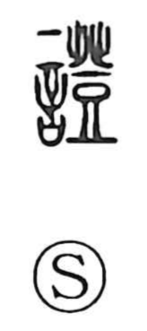

証

Kun: akashi, shirushi | On: sho
proof ・ evidence ・ to prove ・ sign
Explanation
証 is the modern form of 證, combining 言, words, with 登 as its sound element. 證 shares sound and meaning with 徴, a sign or manifestation. It concerns a statement supported by an observable indication—words that have evidence behind them.
The older ritual setting may be an offering presented to the gods, followed by a prayer and a confirming sign of the divine intention. 登 supplies the act of presenting, while the resulting manifestation gives the assurance sought.
From the sign and the supported statement come evidence, proof, and the act of demonstrating that something is true. The character can name the confirming token itself or the act of making the matter known through it.